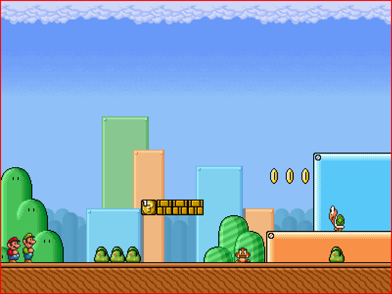
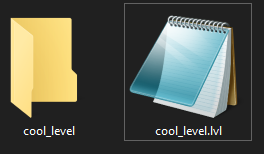
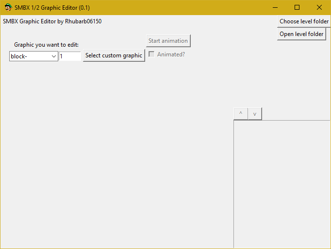
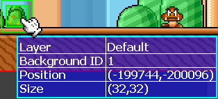
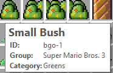
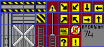
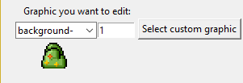
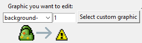
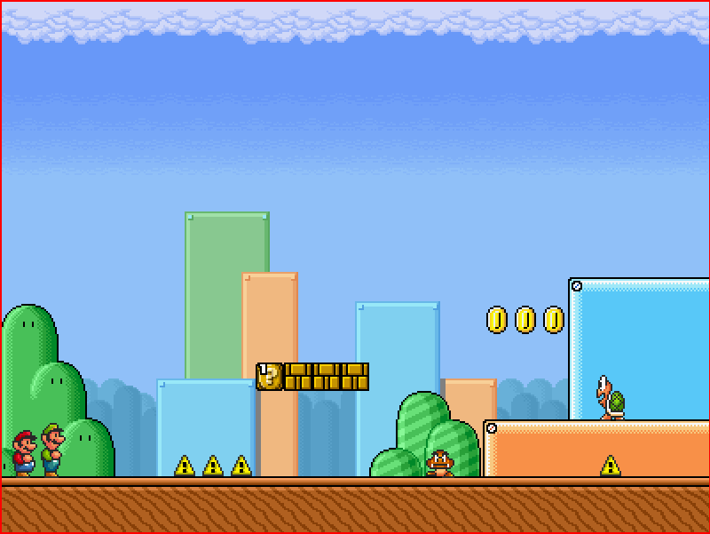
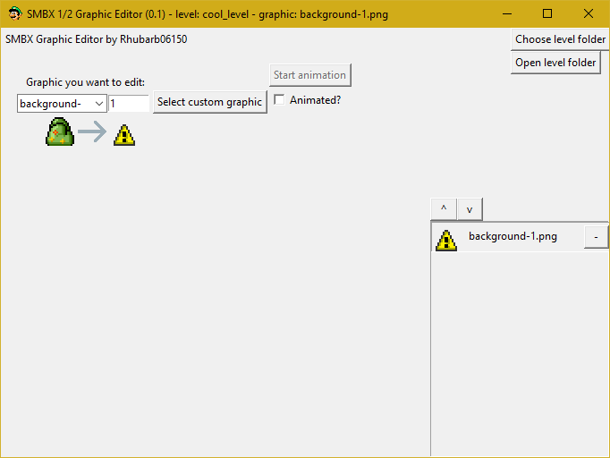

SMBX Graphic Editor is open source, it's made with Python 3 and use the Tkinter Framework for GUI, and PIL and opencv for image processing.
SMBX Graphic Editor permits you to manage, see and modify custom graphics for a SMBX 1 or SMBX 2 level, you can even preview animated graphics.

In this level, I want to change the bush graphic. So first, before anything, I need to save my level and to create a folder that have the same name as my level like this:

Once it's done, I open SMBX Graphic Editor and open the level folder by clicking the "Choose level folder" button at the top right of the window.

Now it's opened, get the ID of the graphic element you want to change, in my case, I want to change the Bakcground Object 1 graphic, I can see the ID when I'm holding the element in some SMBX 1 versions or by hovering it in SMBX 2.
Exmaples:

Now I have my custom graphic sheet that I downloaded here, for any custom graphic I recommend you mfgg.net. So, here is my graphics sheet:

I'm gonna extract only the part I want thanks to any software like GIMP, in my case, I want the mark sign.
I want this tile : so in the software, I select the "background-" category and I put "1" then press 'Return/Enter' on keyboard in the entry next to it because as we saw it later, the bush got the ID 1.

Once you see the graphic you want to edit, click the "Select custom graphic" button and load the tile you want. (Note: the SMBX tiles textures are by default 32x32, which means than if you have a 16x16 texture like the mark sign we got up there, so we need to upscale it in 32x32 in any software.) If everything is done correctly, it should looks like this:

If you are satisfied with the result, then press Ctrl+S, and reload the smbx level.

So, now the graphics are changed, yes it's ugly but it was for the example. And then, you can see, modify and delete your custom level graphics at bottom right of the window.

Everytime you open a level folder, the .lvl or .lvlx file is backuped in the "backups" folder, located in the root folder of the software, which prevent an sudden file deletion, file corruption or a bad manipulation.
Added all main features, such as: graphic editing, graphics managing thanks to the frame at bottom right,animation preview and auto level backuping
Added Open Level in text editor button, Added tile upscaling and now when you load a tile thats is animated, it show up the size in the animation menu (not very stable yet).
Animation data is now loaded correctly, you can see both tiles dimensions by pressing Ctrl+D, ans SMB3 STyle support. I'm currently working on settings.
Reverse animation framerate is fixed.
Added SMB3 Style support, SMB3 Style button for convert tiles to SMB3 style format, still working on settings.
Added graphics filters in the frame at bottom right, so you can more easilly navigate trough the graphics by choosing the type of graphic you only want to see, and I'm STILL working on settings.